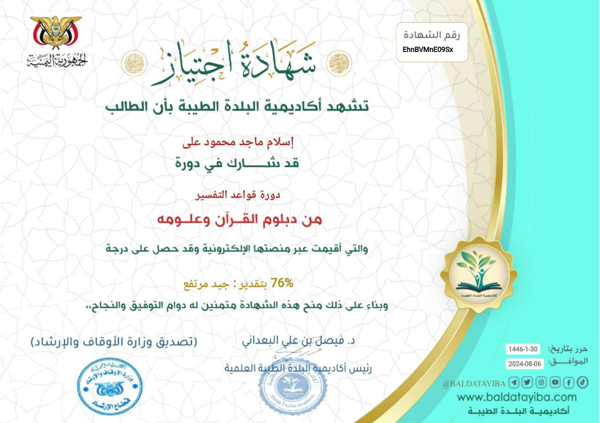
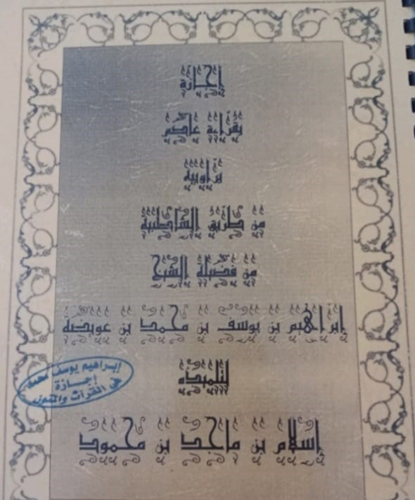
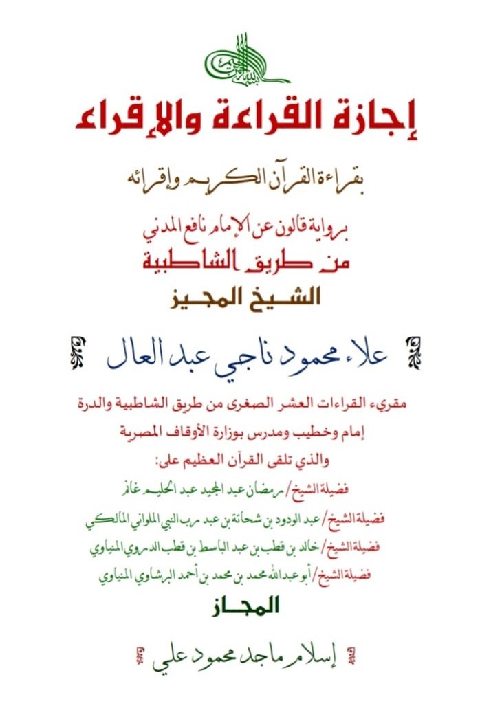
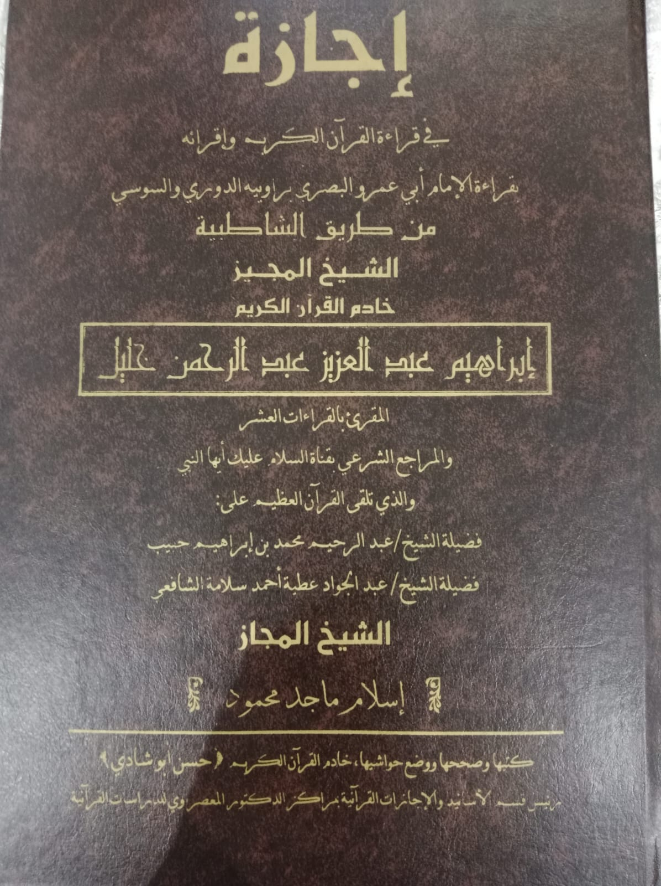
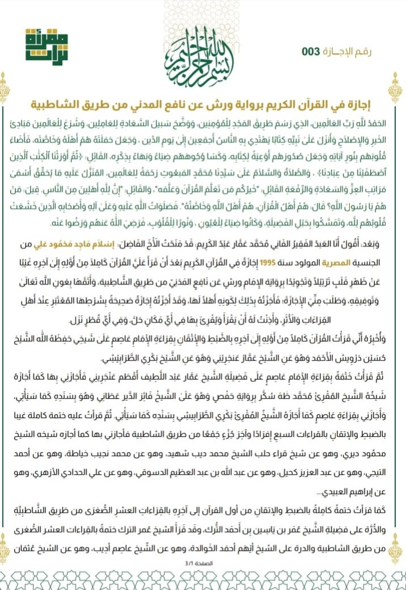
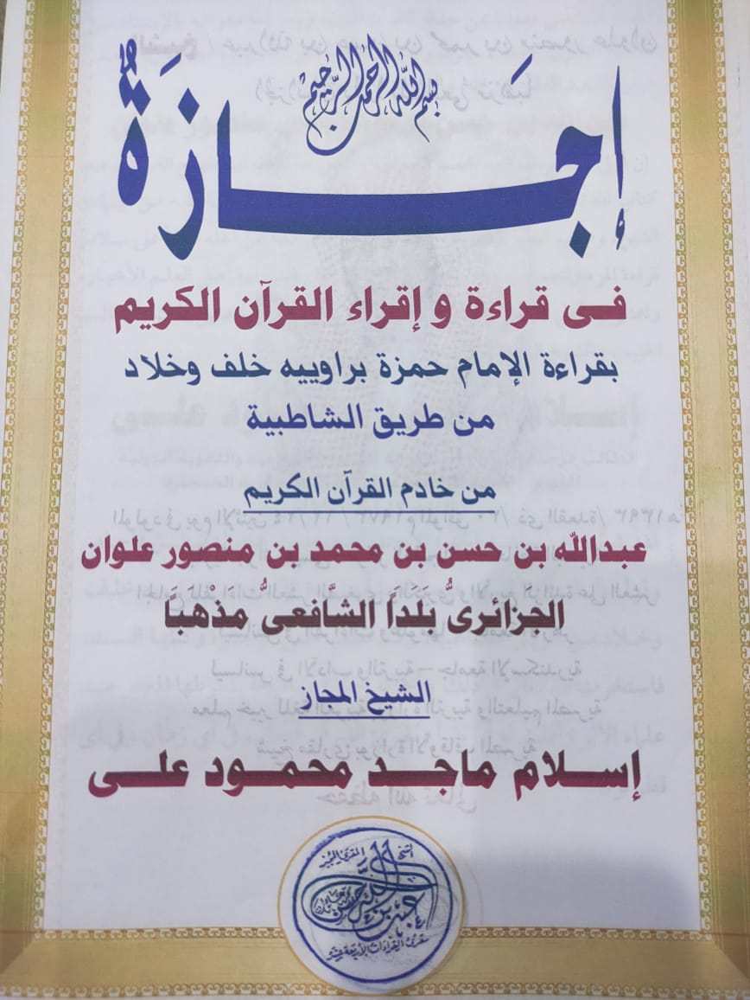
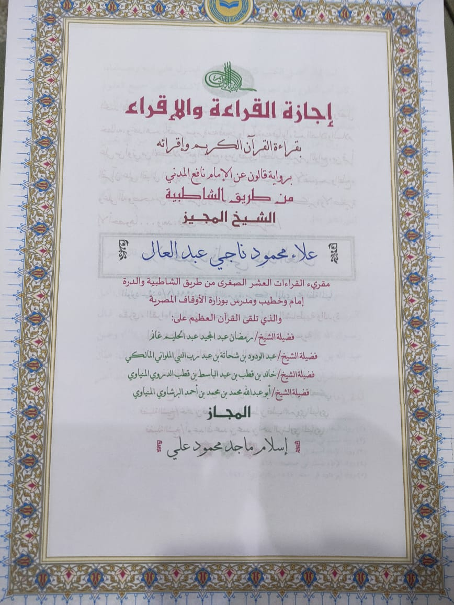
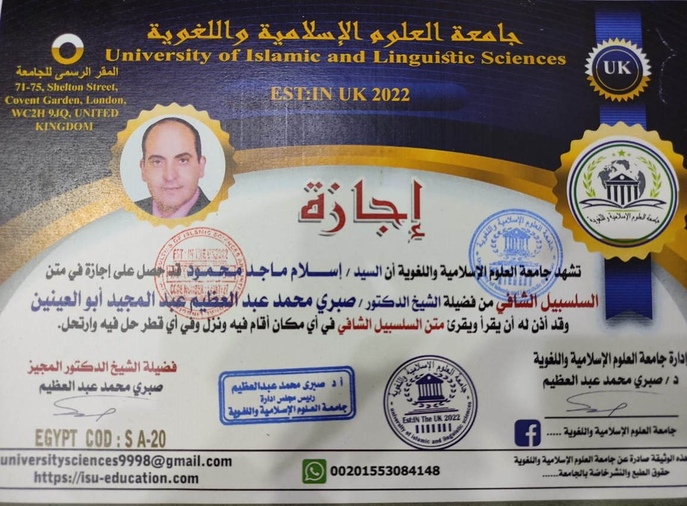
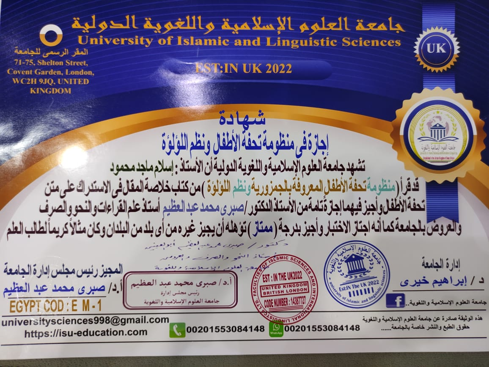
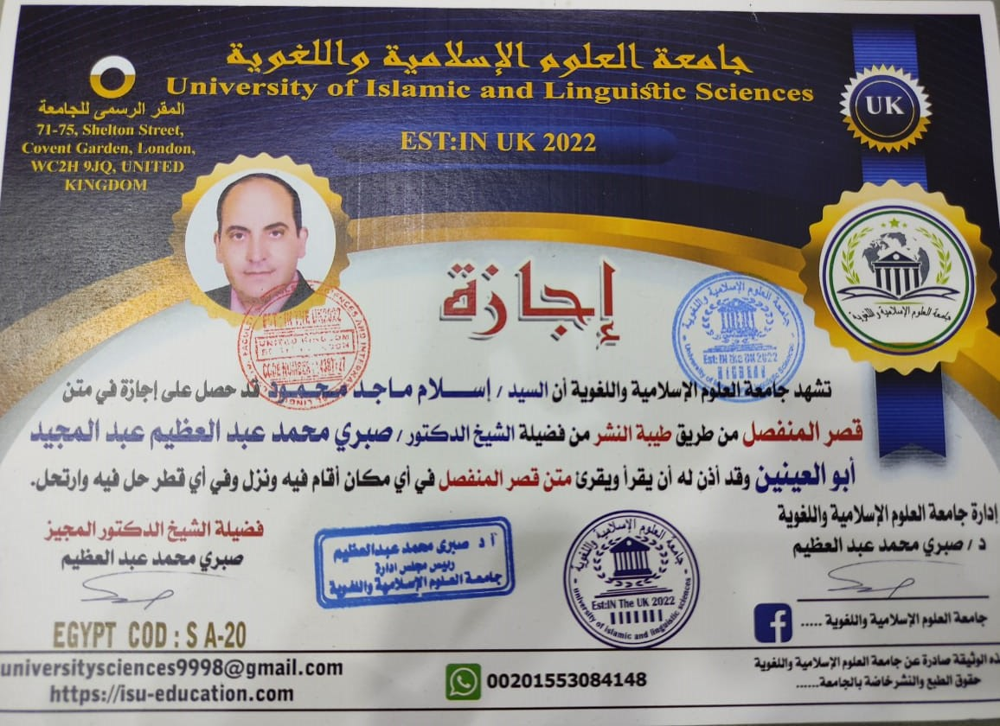

diploma in Quran teacher qualification
diploma in the Holy Quran and its sciences

diploma in Quran interpretation

An Ijazah in the recitation of Asim according to the narration
from the Shatibiyyah pathway

An Ijazah in the recitation and teaching of the Quran according to
the narration of Qalun from Imam Nafi' al-Madani through the
Shatibiyyah pathway

An Ijazah in the recitation and teaching of the Quran according to
the recitation of Imam Abu 'Amr al-Basri, narrated by al-Duri and
al-Susi through the Shatibiyyah pathway

An Ijazah in the recitation of the Quran according to the
narration of Warsh from Nafi' al-Madani through the Shatibiyyah
pathway

An Ijazah in the recitation and teaching of the Quran according to
the recitation of Imam Hamzah, narrated by Khalaf and Khallad,
through the Shatibiyyah pathway

An Ijazah in the recitation and teaching of the Quran according to
the narration of Qalun from Imam Nafi' al-Madani through the
Shatibiyyah pathway, given by the granting scholar

An Ijazah in the text of Al-Salsabil Al-Shafi

An Ijazah in the poem of Tuhfat al-Atfal and the verse of
Al-Lu’lu’ah

An Ijazah in the text of Al-Qasr Al-Munfasil
An Ijazah in the texts of Al-Shatibiyyah and Al-Durra